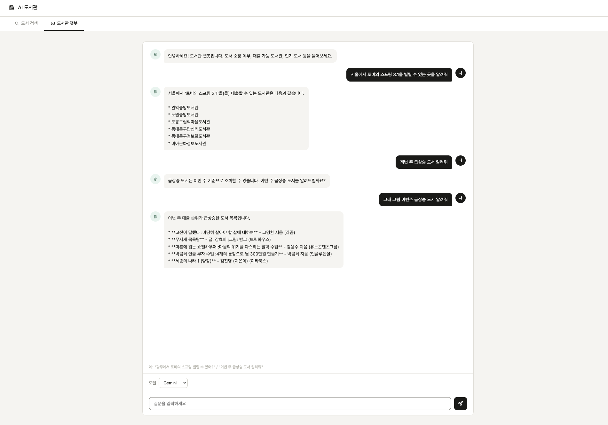
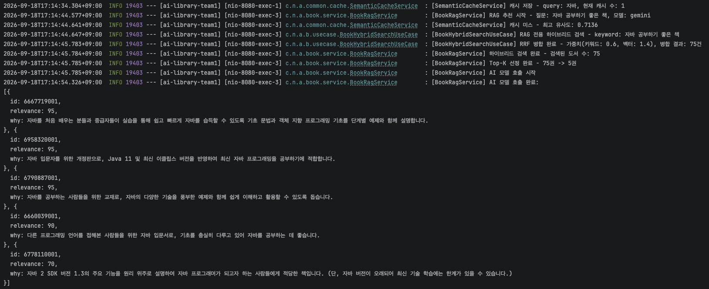
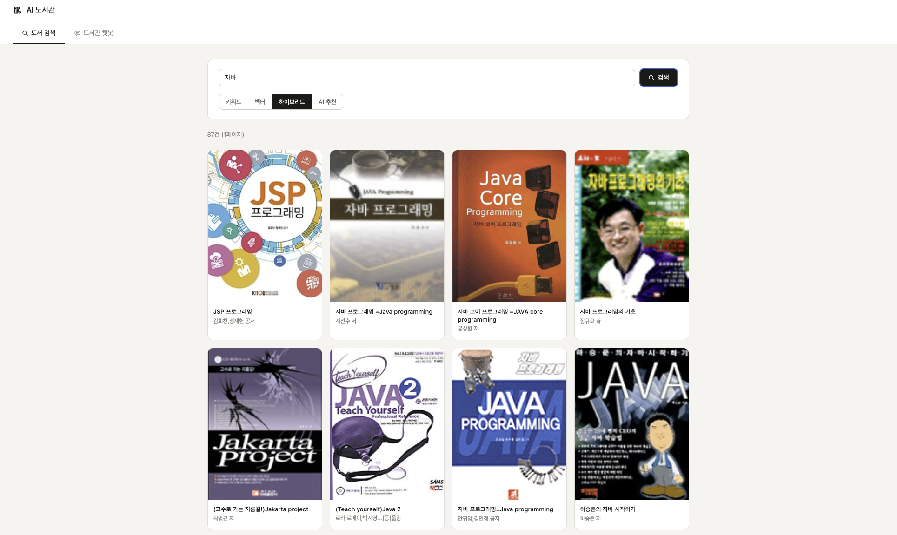
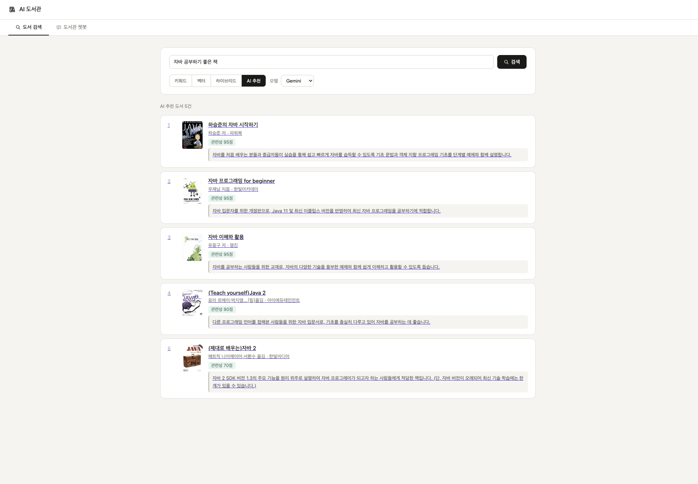
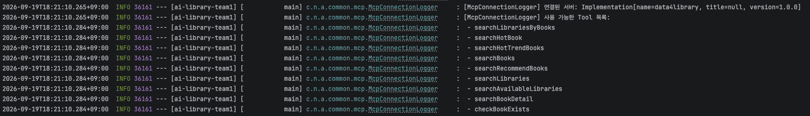
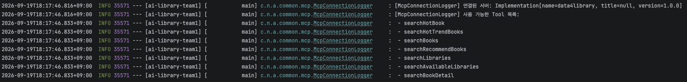
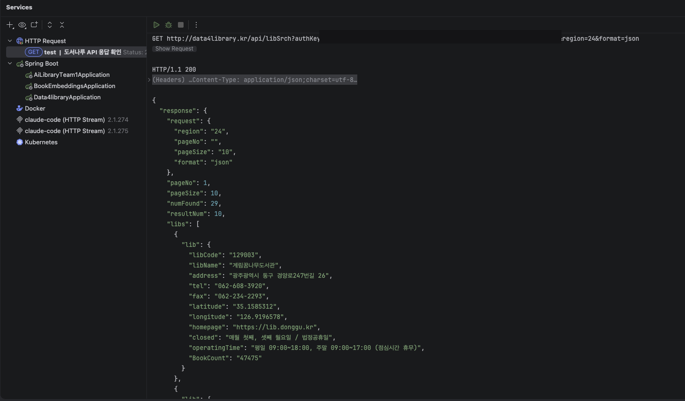
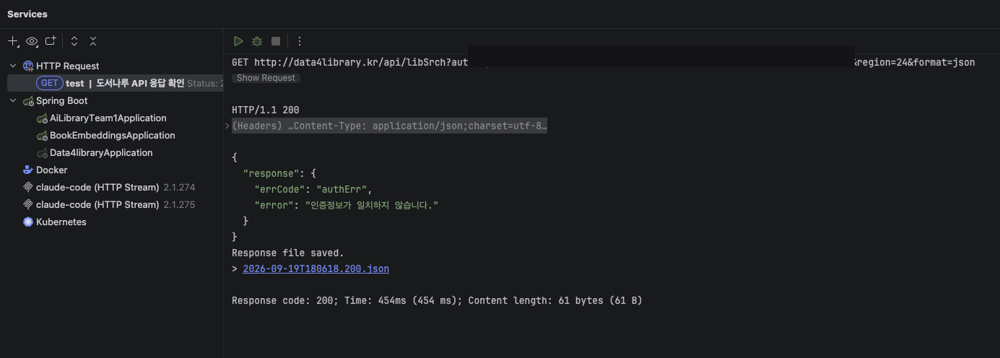
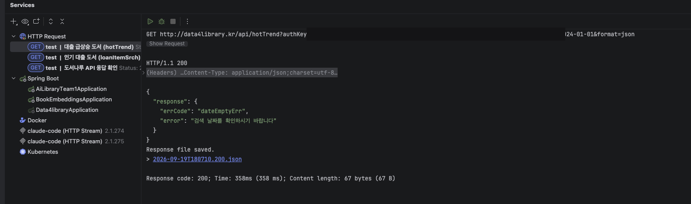

BGE-M3 임베딩 기반 하이브리드 검색 결과를 RRF로 재랭킹해 LLM에 전달하는 RAG 추천 파이프라인과, 국립중앙도서관 Open API를 MCP 프로토콜(SSE)로 감싸 AI가 실시간 도서관 정보를 도구처럼 호출할 수 있게 하는 MCP 서버를 설계·구현했습니다.
RAG 파이프라인과 MCP 서버/클라이언트 설계·구현을 담당했습니다. 검색 담당 팀원과는 문서로 인터페이스만 정의하고 나중에 합치는 방식이 아니라, 실시간으로 함께 코드를 작성하며 검색 결과 스코어링 방식과 RAG로 넘길 데이터 형식을 계속 맞춰갔습니다.
검색 담당 팀원과 페어로 하이브리드 검색(RRF)을 구현하고, 재랭킹부터 LLM 호출·추천 이유 생성까지 이어지는 RAG 파이프라인으로 완성했습니다.
질문 임베딩 간 코사인 유사도가 0.98 이상이면 LLM 호출 없이 캐시된 결과를 즉시 반환해 불필요한 LLM 호출 비용과 지연을 절감했습니다.
국립중앙도서관 Open API(정보나루)를 7개 MCP 도구로 감싸, LLM이 대화 중 실시간 도서관 정보가 필요하면 직접 호출하도록 구현했습니다.
ai-library-team1에 MCP Client(SSE)를 연결해, RAG 응답 생성 중 LLM이 필요 시 mcp-server의 도구를 호출하도록 통합했습니다.
LLM 응답을 SSE로 실시간 스트리밍하는 챗봇 UI를 구현하고, 웹·텔레그램이 같은 대화 맥락(최대 10건)을 공유하도록 만들었습니다.
실제 서비스 아키텍처입니다. 파란색이 제가 설계·구축한 RAG/MCP 영역이고, 회색은 팀원이 개발한 배치·검색 로직 및 외부 시스템입니다.
챗봇 질문은 실제로 서로 다른 두 경로로 처리됩니다. 일반 대화는 LLM이 MCP 도구를 직접 호출하는 챗봇 대화 흐름으로, 도서 추천 질문은 하이브리드 검색과 RRF로 후보를 추려 LLM에 전달하는 RAG 추천 파이프라인으로 각각 처리됩니다. 스크롤하면 지금 읽는 항목이 다이어그램에 표시됩니다.
/api/chat 엔드포인트에서 LLM 응답을 SSE로 실시간 스트리밍하는 챗봇 UI를 구현했습니다. 대화 맥락은 MessageWindowChatMemory(최대 10건)로 관리하며, 웹은 세션 ID를, 텔레그램은 채팅방 ID를 conversationId로 사용해 같은 메모리를 공유합니다.
국립중앙도서관 Open API(정보나루)를 searchBooks, searchHotBook, searchAvailableLibraries 등 7개 MCP 도구로 감싸, LLM이 대화 중 실시간 도서관 정보(대출 가능 여부, 인기 도서 등)가 필요하면 직접 호출하도록 구현했습니다.
ai-library-team1에 MCP Client(SSE)를 연결해, 챗봇 응답 생성 중 LLM이 필요 시 mcp-server의 도구를 호출하도록 통합했습니다.

질문 임베딩 간 코사인 유사도가 0.98 이상이면 LLM 호출 없이 캐시된 결과를 즉시 반환(TTL 30분, 최대 100건)해 불필요한 LLM 호출 비용과 지연을 절감했습니다.

검색 담당 팀원과 페어로 하이브리드 검색(RRF)을 구현하고, 그 결과를 임계값 필터링(RRF 0.02 이상) → 상위 5권 재랭킹 → 도서 정보/리뷰 요약 기반 프롬프트 구성 → LLM 호출 → 추천 이유 생성까지 이어지는 RAG 파이프라인으로 완성했습니다.


성능이 높지 않은 LLM을 사용할 경우, 순차적으로 Tool을 호출해서 결과를 만들어내야 하는 Tool Calling 방식에서 엉뚱한 Tool을 계속 호출하는 문제가 있었습니다. 결과가 나오기까지 오래 기다려야 했고, 그 결과마저도 원하는 답이 아닌 경우가 허다했습니다.

도서관 검색과 소장·대출 가능 여부 확인을 하나로 묶은 복합 Tool(searchAvailableLibraries)을 만들어 두 단계 로직을 서비스 레이어에서 한 번에 처리했습니다.
LLM은 ISBN13과 지역만 넘기면 대출 가능한 도서관까지 받을 수 있어 저성능 모델도 안정적으로 사용할 수 있게 됐습니다.
고성능 모델(Gemini)에는 searchBooks → searchAvailableLibraries처럼 순차 조합 구조를 그대로 유지했습니다.

복합 Tool 도입 후 저성능 모델에서도 Tool Calling이 성공해, 사용자가 원하는 도서관 정보를 안정적으로 받을 수 있었습니다.
정보나루 Open API는 호출 성공 여부와 무관하게 항상 HTTP 200을 반환했고, 실패 시에도 별도 에러 응답 형식 없이 성공 응답과 동일한 response 키 안에 errCode/error 필드만 추가로 담겨왔습니다.
응답을 곧바로 원하는 타입으로 역직렬화하면 실패 케이스에서 파싱 에러가 나거나, 에러 필드가 조용히 무시되어 잘못된 성공 응답처럼 처리될 위험이 있었습니다.



팀원과 페어로, 모든 API 호출을 공통 실행 로직(execute)으로 통일해 원시 JSON을 먼저 느슨한 에러 체크용 DTO(NaruApiResponse<NaruErrorResponse>, @JsonIgnoreProperties(ignoreUnknown = true))로 1차 파싱해 errCode 존재 여부부터 판별하고, 에러가 없을 때만 실제 타입으로 2차 역직렬화하는 구조를 설계했습니다.
이후 에러 코드를 문자열 대신 타입 안전한 ErrorCode enum으로 바꾸고, JSON 파싱 실패(JsonParseException)와 그 외 API 호출 실패를 NaruApiException으로 구분해 던지도록 다듬었습니다.
API를 설계할 때 성공/실패를 HTTP 상태 코드와 명확한 에러 코드 체계로 구분하고, 요청·응답 구조를 엔드포인트마다 다르지 않게 일관되게 유지해야 한다는 원칙을 직접 체감했습니다.
이후 직접 API를 설계할 때는 항상 이 기준(명확한 에러 코드, 일관된 요청/응답 스키마)을 우선적으로 고려하게 되었습니다.
RAG 파이프라인 + MCP 서버/클라이언트 담당
정기 회의 없이 Notion 기반 비동기 협업으로 진행
하이브리드 검색(RRF)은 미리 역할을 나눠 각자 작업한 뒤 합친 게 아니라, 검색 담당 팀원과 실시간으로 함께 코드를 작성하며 만들었습니다. 검색 결과 스코어링 방식이나 RAG로 넘겨줄 데이터 형식처럼 두 기능이 맞닿는 지점에서 계속 의견을 맞춰야 했던 만큼, 문서로 인터페이스를 정의하고 나중에 통합하는 방식보다 함께 짜면서 바로바로 조율하는 방식을 택했습니다.